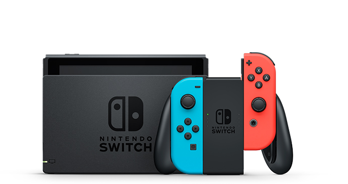
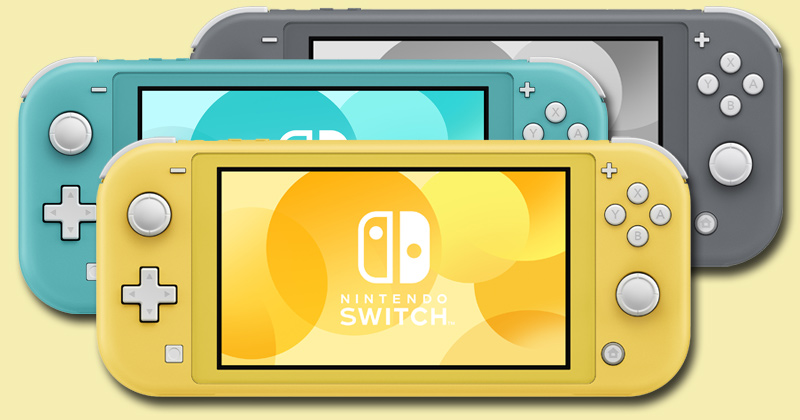
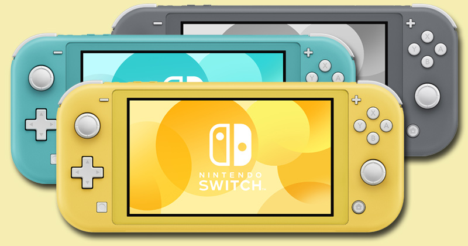

Die Nintendo Switch ist im März 2017 erschienen. Sie war der Nachfolger, der Wii U und Gleichzeitig auch der Nachfolger des Nintendo 3DS. Die Switch wurde bis jetzt etwa 114 Millionen Mal verkauft, womit sie die dritterfolgreichste Konsole von Nintendo ist und die fünft Erfolgreichste im Ganzen und da sie noch im Trend ist könnte sich, dass noch erhöhen. 2022 wurden etwa 10 Millionen Exemplare verkauft. Mit dem ist sie alleine in 2022 fast soviel verkauft worden, wie die Wii U im Gesamten. Die Switch ist die erste Hybridkonsole. Das heisst die Switch ist die erste Hybridkonsole, das heisst, sie ist eine Konsole, die sowohl eine Heimkonsole wie auch eine Handgehaltene Konsole ist. Bei der Switch gibt es auch verschiedene Controller. Normalerweise ist ein Bildschirm dabei und zwei Joy-Cons. Es gibt auch noch die Nintendo Switch Light, bei der man die Joy-Cons nicht abnehmen kann und die Nintendo Switch OLED, die Organische Leuchtdioden (OLED) benutzt, was für bessere Kontraste und Farbgenauigkeit sorgt. Nintendo war in einem tief nach der Wii U, die nicht gut angekommen war. Bei der Wii U gab es das Wii U Pad, dass kein riesiger Erfolg war, denn man konnte es nicht überallhin mitnehmen. Bei der Switch hat man wieder alles in einem. Die Switch braucht Chips um die Spiele zu spielen. Die Spiele der Switch kommen zwar gut an, aber sie sind meistens sehr teuer. Das meistverkaufte Spiel ist Mario Kart 8 Deluxe mit 48 Millionen Verkäufen gefolgt von Animal Crossing: New Horizon mit 40 Millionen Verkäufen. Die 10 meist verkauften Spiele der Switch wurden alle mehr verkauft als die Wii U Konsole. Neben den Joy-Cons bei der Switch gibt es auch noch Pro Controller. Mit diesen kann man zum Teil auf der Switch und auf dem PC spielen, was auch ein grosser Vorteil ist für diese Kontroller (Wikipedia, 2022; Statistica®, 2022; Hitesh B., 2019).


Nintendo Switch
https://www.nintendo.ch/de/Hardware/Nintendo-Switch-Familie/Welche-Nintendo-Switch-ist-die-richtige-fur-dich-/Welche-Nintendo-Switch-Konsole-ist-die-richtige-fur-dich-1596110.html
Nintendo Switch Lite
https://www.gameswirtschaft.de/marketing-pr/nintendo-switch-lite-light-preis-unterschiede/